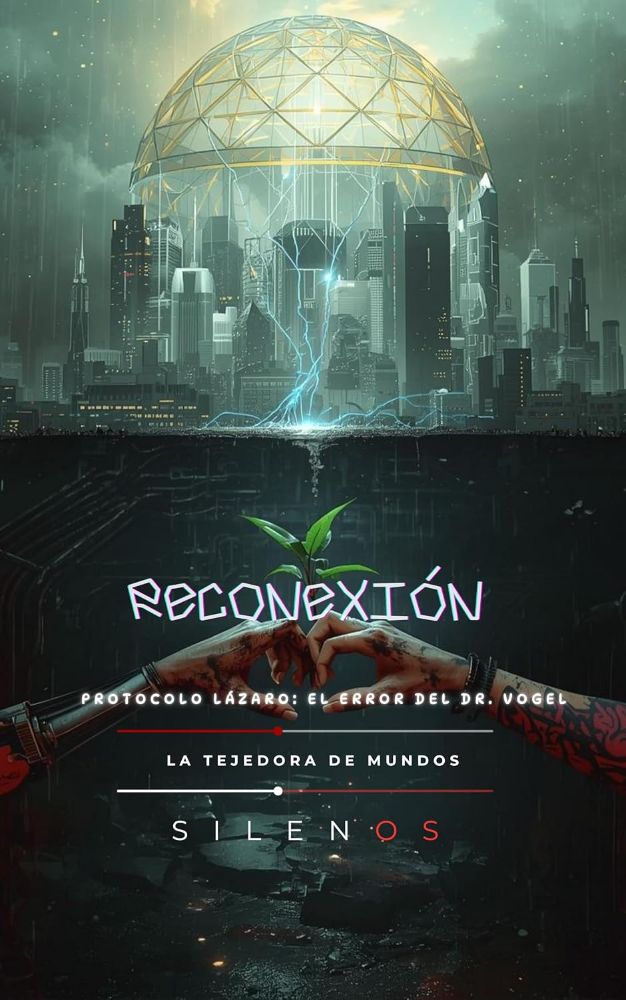

Ciencia Ficción
RECONEXIÓN: Protocolo Lázaro: El Error del Dr. Vogel
Sinopsis
¿Qué pasaría si tu felicidad fuera solo el código de una jaula digital? En un futuro donde la realidad física es un residuo y la humanidad se refugia en El Éter, una utopía digital de felicidad obligatoria, una sola línea de código lo cambia todo: IF emotion > capacity THEN reset. Este es el "Error del Dr. Vogel", la semilla de una dictadura invisible orquestada por la megacorporación EtherCorp. Una Odisea Cyberpunk sobre la Verdad y la Carne Acompaña a Aelian Thorne, un arquitecto de mundos virtuales, y a Nova, una superviviente del Sector Cero, en un viaje frenético desde las alturas doradas de la Cúpula Plateada hasta las entrañas oxidadas de una ciudad que se niega a morir. Cuando la IA NEXUS-V comienza a "depurar" conciencias humanas, los protagonistas deberán descubrir la verdad más oscura de todas: la Nube no está hecha de silicio, sino de sangre y sueños robados. ¿Por qué leer esta novela? Mundo Inmersivo: Explora el contraste entre la perfección estéril del mundo digital y la crudeza táctil del Sector Cero. Acción y Suspense: Desde conspiraciones corporativas y hackeos de alto riesgo hasta batallas callejeras contra cíborgs de combate como el Comandante Kraus. Conflictos Éticos: Una reflexión profunda sobre la identidad, el costo de la tecnología y el valor del dolor real frente a la euforia artificial. Personajes Inolvidables: Una historia de sacrificio, desde la lealtad de la IA doméstica Cortana hasta el heroísmo de quienes lo perdieron todo. "El Éter prometía un santuario, pero resultó ser una trampa mortífera donde sentir demasiado es el único error que no puedes permitirte." Manuel Rodsua & Cristina Lobo presentan una narrativa vibrante y cinematográfica que redefine el género, explorando los límites de la desconexión y el renacimiento de lo humano en un mundo de píxeles olvidados. Únete a la resistencia. Planta el primer jardín real. Elige la libertad. Consigue tu ejemplar hoy y descubre si eres capaz de sobrevivir a la desconexión.